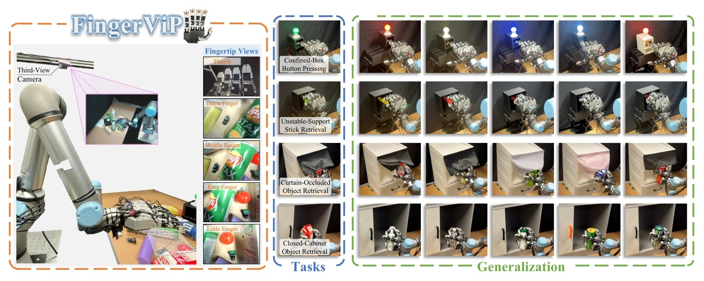
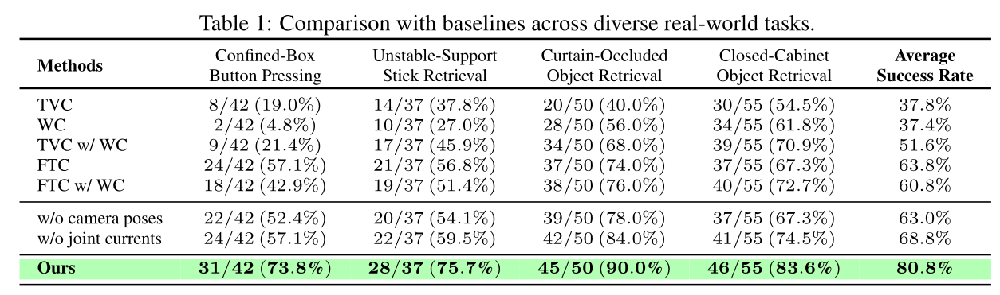
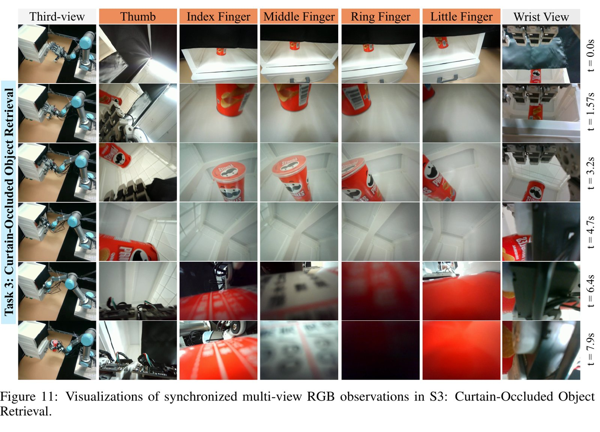
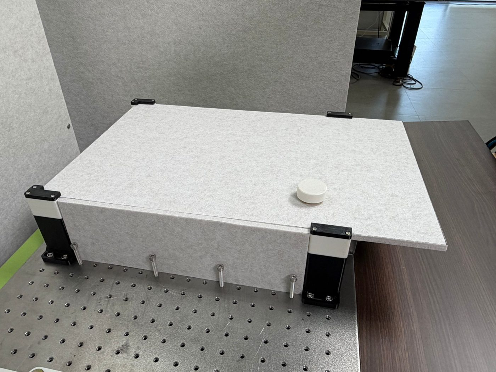
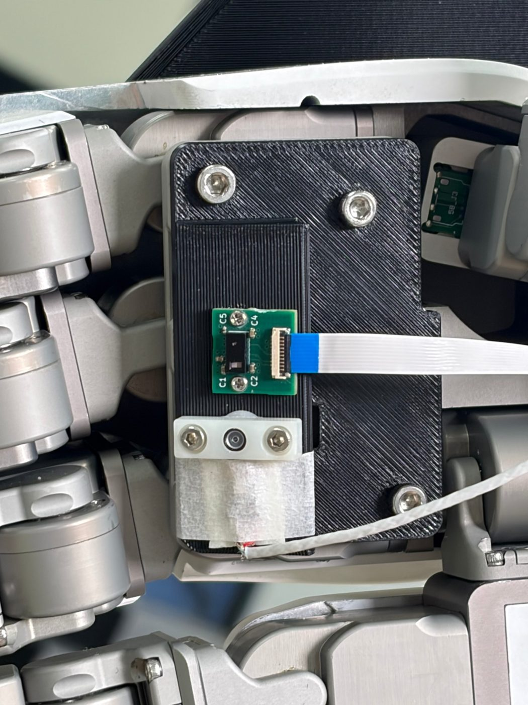
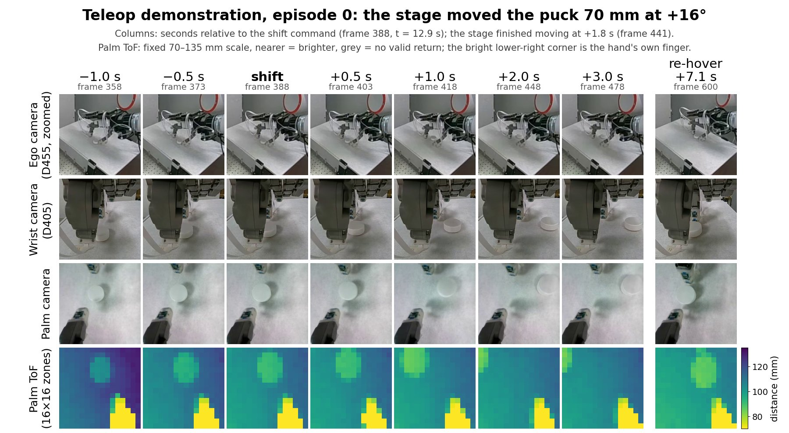
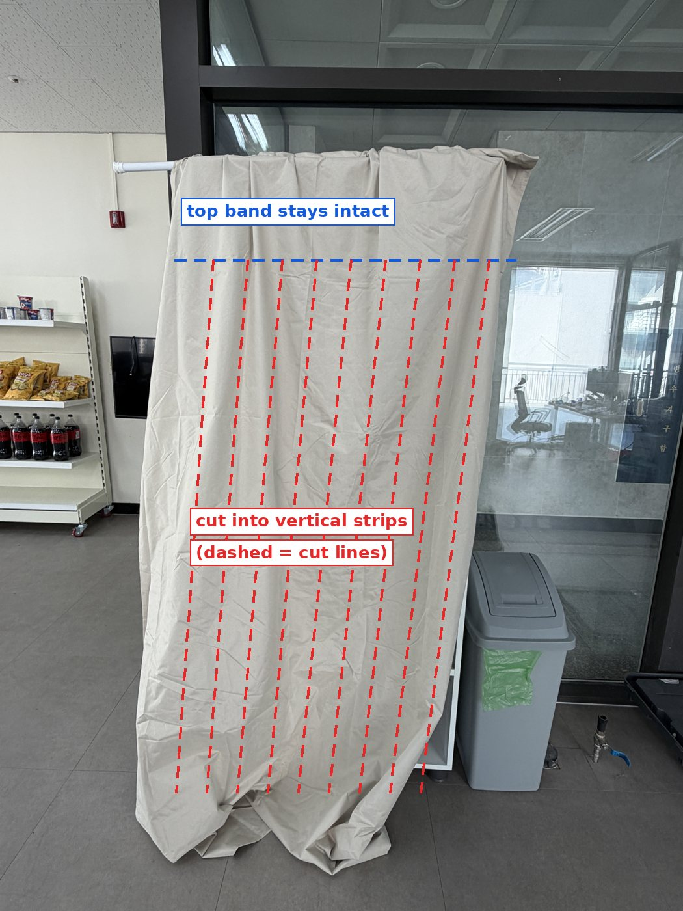
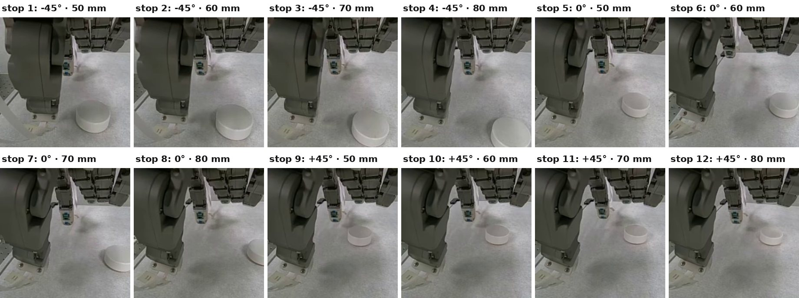
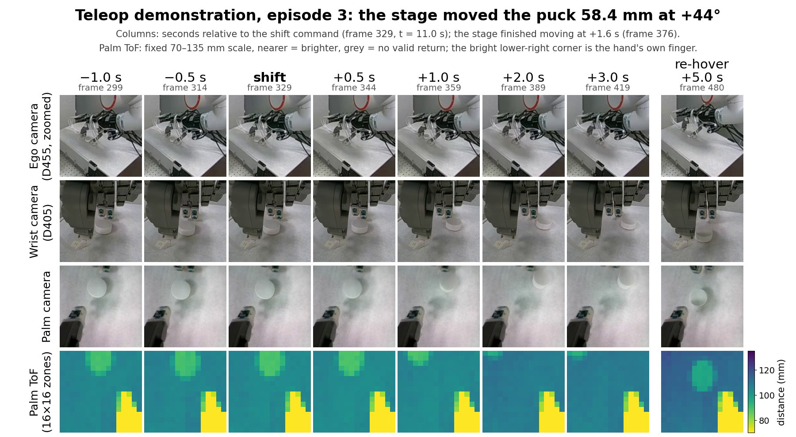
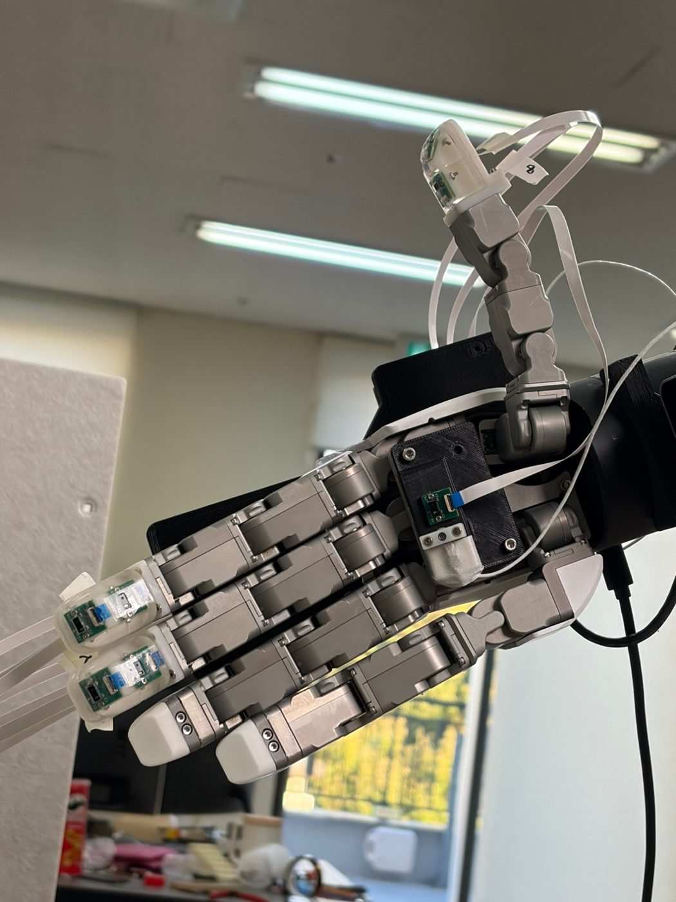

In normal light the cameras still see the object, so we are moving the task into the dark
Yesterday's pilot: after the stage moved the puck under the hand, the wrist camera still saw it in 14 of 14 cases. Next: retrieve an object from a dark bookshelf behind a curtain, where the cameras see nothing but the hand's ToF sensors, which bring their own infrared light, still work.
The goal
One task where proximity sensing beats vision
- Claim to show: a VPLA (π0.5 + the hand's ToF proximity sensors) succeeds where the same policy with cameras only (VLA) fails. So the task must defeat the cameras but not the ToF.
- Closest work, FingerViP (Zhang et al., CoRL 2026, arXiv 2604.21331): an RGB camera in each of five fingertips, used for curtain-occluded and closed-cabinet retrieval. Their occluded scenes are lit: the curtain covers only the top of the opening, and the compartment behind it is bright, so every fingertip camera (and the wrist camera at the start) sees the can by room light (their Fig. 11). Neither task was tested in the dark; their future work lists “integrated illumination for low-light scenarios”. Our ToF is active and works in complete darkness.


| Row | Stands for | Cameras the policy gets |
|---|---|---|
| TVC | Third-View Camera | one fixed external camera looking down at the scene (RealSense D435i) |
| WC | Wrist Camera | one camera on the wrist (also a D435i, added only for this comparison) |
| TVC w/ WC | third-view with wrist | both of the above: the standard two-camera baseline |
| FTC | FingerTip Cameras only | the five fingertip cameras, no external or wrist camera |
| FTC w/ WC | fingertips with wrist | the five fingertip cameras plus the wrist camera |
| Ours | FingerViP | third-view + five fingertip cameras, plus each fingertip camera's pose and the finger joint currents |

Two more CoRL 2026 papers close to ours: FingerEye and ProxiDex
- FingerEye (Xu et al., spotlight, arXiv 2604.20689): two RGB cameras per fingertip (LEAP hand) looking through a clear plate on a compliant silicone ring. Before contact: images + implicit stereo depth. After contact: mini AprilTags printed inside the plate are tracked to measure its deflection, which gives a force/torque estimate. Transformer policy (not a VLA): mean success 37.5% wrist-only → 71.3% with FingerEye on six real tasks. No light of its own, so it needs room light.
- ProxiDex (Bai et al., arXiv 2609.16586): “proximity” is computed, not sensed: distances between the hand's and the object's point clouds (one RGB-D camera + object reconstruction), averaged per region (palm, finger roots, fingertips). It feeds a diffusion policy (not a VLA) and is shown to the teleoperator in the VR headset as a proximity cue. Real world 72.6% vs 62.9% (CordViP). Needs the camera to see the object, so it fails under full occlusion.
- Ours: a real proximity sensor (dToF) in the fingertips and palm, inside a VLA, working in complete darkness.
22 October
The lit pilot failed: the cameras still see the moved puck
- Idea: the hand hovers over a puck; a motorised stage under a felt board moves it 50–80 mm sideways; the hand was supposed to hide it from the cameras so that only the palm ToF knows where it went.
- Result (4 teleop episodes, 14 moves): the wrist camera saw the puck after 14 of 14 moves, the palm camera after every move. The wrist camera looks past the fingertips, so no shift size or angle fixes this.



Being built now
New task: take an object out of a dark bookshelf behind a curtain
- Setup: the arm reaches through a strip blackout curtain into a dark shelf; a mini Pringles can sits at a random, logged spot in a marked area; one generic prompt.
- Why it fits: in the dark the wrist, palm and ego cameras see nothing; the ToF still measures distance. Darkness is checked per camera, every episode.
- Plan: (1) first dataset in complete darkness; (2) if the VPLA works, add bright / dim / dark and compare VLA vs VPLA at each level; (3) two unseen objects.
- Training: both policies from the π0.5 base, relative end-effector actions.

Request
Attending CoRL 2026 (Austin, 9–12 November)
- The ask: attend with my senior and split the program. Workshops (Thu 12 Nov, 32 half-day, 8 relevant to us) and the 687 posters run in parallel, so one person can cover at most 2 workshops.
- Why, for the company (dToF sensing in fingertips and palm):
- The niche is open: none of the 687 accepted papers puts ToF/proximity sensing into a VLA. The competing ways to sense close to the hand are all there in person: fingertip cameras (FingerViP, FingerEye) and computed proximity (ProxiDex), all three in one poster session (Tue 10 Nov), plus motor current as touch.
- Making the sensor matter: ~15 papers (e.g. T-Rex, MoSS, DAM-VLA, PACE) and two workshops, Pretrain to Adapt (adapting pretrained VLAs; Karl Pertsch, Physical Intelligence, makers of our π0.5) and BiDexTool (bimanual dexterous tool use; asks how touch and force should be fused into VLAs), tackle the failure we hit: a policy that ignores a new sensor. What makes an added sensor actually used decides whether dToF in a hand is worth buying.
- Contacts: hand and sensor makers at the exhibits and demos; authors of the closest work.
- Our paper: the same answers feed the RSS 2027 extended abstract (a robotics conference; due 4 Dec).
- No lost bench time: the dark dataset is collected, and the VLA and VPLA are trained and tested on the robot, before I leave (~7 Nov).
| Cost | Amount |
|---|---|
| Registration, Academic rate (post-master researcher, NREL, KAIST ME); Late rate after 31 Oct is $1,500, non-refundable | $800 |
| Flight Incheon ↔ Austin, economy, one stop (estimate; no nonstop) | $1,000–1,700 |
| Hotel: my half of one room shared with my senior, 4–5 nights at $200–400 incl. 17% tax (estimate; the conference block is sold out) | $400–1,000 |
| Meals, airport transfers (Daejeon ↔ Incheon, Austin airport ↔ downtown), insurance | $335–735 |
| Total for me (≈ ₩3.4–5.6M at ₩1,325/$) | $2,540–4,240 |
The CoRL workshops that matter for VPLA and the company (Thu 12 Nov; ranked)
| Workshop | When | Relevant topic (from its site) | Why it matters for us |
|---|---|---|---|
| Pretrain to Adapt | PM | Call for papers: “Adapting pretrained policies to new sensor modalities (e.g. tactile, depth, audio, wrist and multi-view cameras)”. | Our exact problem: π0.5 ignored the added ToF. How to make a pretrained VLA actually use a new sensor decides whether a dToF add-on is worth buying. Physical Intelligence (π0.5) invited. |
| BiDexTool: Bimanual Dexterous Tool Use | AM (likely) | Core challenge 3, “Multisensory Perception and Feedback”: “Vision alone is often insufficient … contacts may be occluded … How should these signals be fused and exposed to policies, controllers, and VLA/world-model systems …?” | The VPLA question (how to fuse a non-vision sensor into a VLA) and the company pitch (vision is not enough near contact). Hand maker Sharpa speaks: a potential dToF customer. |
| Dexterous Manipulation (3rd) | PM | “Perception: Seeing & Feeling the World”: “robust visual perception under occlusion and clutter, tactile sensor designs and representations, and multi-modal fusion”; “How can robotic systems extract useful information when the hand itself occludes the object or scene?” | The hand hiding the object is why our lit pilot failed and why the dark task needs in-hand sensing; the audience designs and buys dexterous hands and their sensors. |
| UMI Arena | PM | “Force and tactile sensing with multi-finger dexterity”; “Vision-language-action (VLA) models and diffusion policies for real-robot manipulation”. | The one workshop putting multi-finger sensing and VLAs side by side: where an in-hand dToF meets the policies that would use it. |
| Everything Beneath the Policy | AM | “the sensing and data collection pipeline”, “the action and observation spaces exposed to the policy”; invites “Negative or surprising results”. | How the observation design (our ToF tokens) decides what the policy learns; a fit for our negative result that a policy ignores an added sensor. |
| Contact-Rich Loco-Manipulation | PM | Call-for-papers tag: “Multimodal sensing”. | Sensing for contact on whole-body robots: a second market for hand-mounted dToF (medium fit). |
Workshop paper deadlines have passed, so these are for attending and talking to people. Times from each workshop's site.
Paid from the lab's project budget. Decision needed by 31 October (Standard rate ends). Within a week of returning: a trip report (~20 annotated papers ranked for VPLA and the lab), a lab seminar, answers to 3–5 open VPLA questions from the authors, and a contact list.
For discussion today
Questions
- Light levels: start with darkness only and add bright and dim once it works, or all three from the start?
- Reviewers: the strongest objection is “use an infrared camera”. How much should the paper address it (and “just add a light”)? Our short answers:
- “Just add a light to the hand.” A light fixes darkness, so we test it directly: light level (bright / dim / dark) is the experiment's factor, and the camera-only VLA in bright light is the baseline the dark VPLA must match. A light next to the camera also blows out the image at grasp distance (glare, saturation), and some settings should stay dark (beside a sleeping patient, inside a bag or closed box).
- “Put an IR camera in the palm.” It sees in the dark, but it measures brightness, which mixes distance with how reflective the surface is; the dToF measures distance directly (±10 mm over 20–300 mm for 5–90 % reflectivity, down to 10 mm), where IR illumination saturates and depth cameras have no reading (D405 minimum ~7 cm). It is also tiny (fits in fingertips), sends a 16×16 distance grid instead of video, and records no images (privacy). Plan: an IR palm-camera arm as a comparison after the main result.
- CoRL: may I go (Academic registration, $800), and can the lab budget cover it? Registration must be in by 31 October.
More detail (not needed for the meeting)


- Ego camera: the puck is a ~10-pixel spot. Palm ToF: at the hover the puck sat near the top edge of its field; after 5 of 12 moves it was at the edge or outside.
- Fingertip ToF sensors are not shown: the 45° and thumb-palmar sensors see the hand's own fingers; the forward-looking ones change during a shift by the same amount as in windows without a shift (the operator's fingers kept moving), so they cannot be credited with seeing the puck.
- Related: MuseVLA (radar-assisted hidden-object retrieval), FingerEye (CoRL 2026, binocular fingertip cameras).
